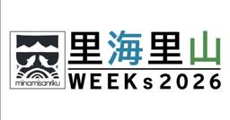
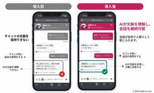
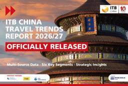

トラベルボイス
https://www.travelvoice.jp
観光産業の最新情報やトレンドを伝える、読者数No.1の専門ニュースメディア。厳選ニュースのほか、分析データや識者によるわかりやすい解説コラム記事も満載。その日のニュースをコンパクトにまとめたメールマガジンも好評。
フィード
ドラゴンボールZと知的財産（IP）騒動とは？ コンテンツが旅行する理由になる時代【コラム】
トラベルボイス
日本観光振興協会理事長の最明仁氏によるコラム。今回は、日本の創造力・ものづくりを、観光の力にどう取り込むかを考察。
1日前
世界の国際観光客到着数、2026年上半期は6.9億人で0.4％増、中東22％減、西欧は猛暑影響、通年予測を下方修正 ―UNツーリズム
トラベルボイス
UN Tourismは、2026年上半期の国際観光客数が前年同期比0.4%増の6.9億人になったと発表。中東情勢やコスト上昇が影響し、成長は鈍化。通年の成長予測は1〜2%へ下方修正された。
2日前
米大手航空3社、燃料価格高騰で運航計画を縮小、不採算路線を整理へ、一方で短期需要は堅調
トラベルボイス
ロイター通信によると、米航空大手のアメリカン航空、ユナイテッド航空、サウスウエスト航空は、燃料価格の急騰によるコスト増を受け、運航計画の縮小や見直しを進める。一方、短期的な旅行需要は堅調に推移している。
2日前
世界のハブ空港ランキング2026、トップはイスタンブール空港、ロンドン・ヒースローが2位に後退、羽田は8位 ―OAG
トラベルボイス
OAGは、2026年世界のハブ空港ランキングを発表。トップはロンドン・ヒースロー空港を抜いてイスタンブール国際空港に。羽田は8位。
2日前

宮城・南三陸町観光協会ら、里海・里山を体験するイベント開催、イヌワシの野生復帰から語り部バスまで
トラベルボイス
宮城県南三陸町観光協会などが2026年10月31日から「里海里山WEEKs2026」開催。イヌワシ野生復帰プロジェクト報告や、海藻の陸上養殖、海中熟成ワイン体験などで南三陸の自然と産業を体感。
2日前
国宝・久能山東照宮を夜間ライトアップ、特別拝観で歴史的建造物と現代アートが融合
トラベルボイス
静岡県静岡市の久能山東照宮で、2026年9～11月の週末や休日に夜間特別拝観「光彩−IRODORI−」開催。折り紙をテーマにしたライトアップや、平和の象徴・バクの投影で歴史的建造物を彩る。
2日前

トリプラ、宿泊施設向けAIチャットボットで生成AI対応、FAQから自然な回答、100言語超で提供
トラベルボイス
tripla（トリプラ）は、AIチャットボット「tripla Bot」をアップグレード。大規模言語モデル（LLM）を活用した対話型AIへ移行し、自然で安全な言語対応を実現した。
2日前
Klook、鹿児島県と連携でインバウンド誘客、福岡から新幹線片道運賃を最大1万1420円助成、周遊パスも展開へ
トラベルボイス
Klookは鹿児島県と連携し、2026年9月より訪日客向けの新幹線料金助成キャンペーンを開始する。福岡から鹿児島への送客を促すため、宿泊予約者に対し博多・鹿児島間の新幹線片道相当額を支援し、地方誘客を図る。
2日前
エクスペディアが日本市場で目指す次の成長とは？ 20年の軌跡と次の変革を日本トップに聞いた
トラベルボイス
2026年に日本市場への参入から20周年を迎えるエクスペディア。この期間、グローバルOTAとして日本で注力てきたこと、今後の展望とは？ 日本統括ディレクターの木村奈津子氏に聞いた。
2日前

中国人の海外旅行、2025年は16％増の1.68億回、ラグジュアリーや文化・学びの旅に注目、AI活用も加速 ―ITB China
トラベルボイス
ITB Chinaは、「ITB China Travel Trends Report 2026/27」レポートの中で中国旅行市場について最新動向を分析。中国人旅行者は品質、本物の体験、パーソナライズされたサービスをさらに重視。
2日前